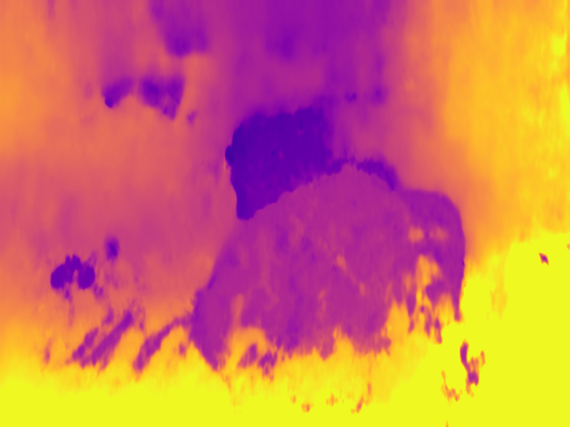
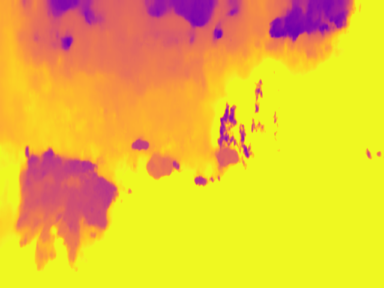
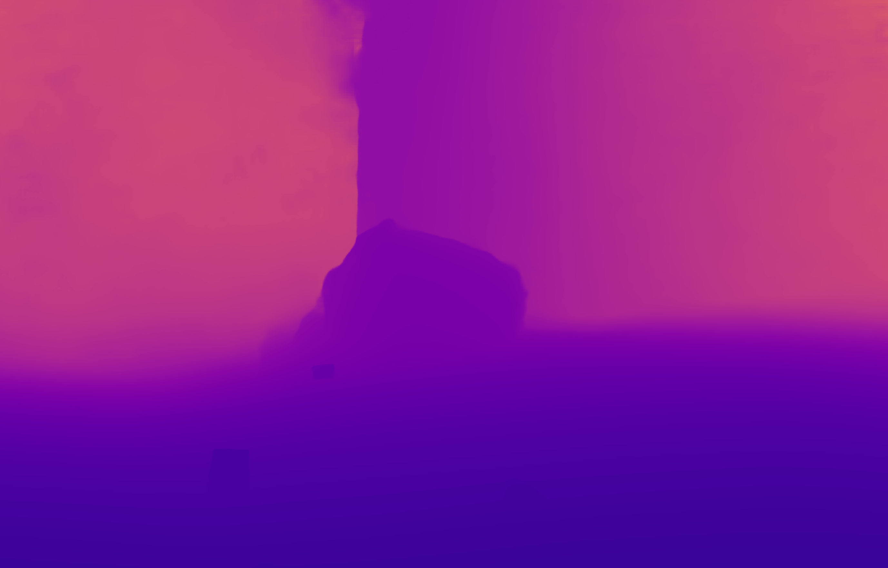

üìã Project Overview
This project repository is specially created for visualizing and comparing different models' performance for underwater datasets. We include comprehensive analysis covering:
- Visualization for different encoders and their performance characteristics
- Visualization of predictions for models under different settings and environments
- Systematic evaluation for models on different datasets (underwater and in-air)
- Detailed metric explanations and their meanings in context
- Introduction and analysis of different datasets used in experiments
- All related reference links to papers and project websites
üìä Datasets
Underwater Datasets
FLSea Stereo Dataset
- Size: Comprises 4 distinct stereo subsets with each subset containing thousands of image pairs, totaling over 7337 (3803+2362+867+305) synchronized stereo image pairs. The dataset provides both RGB images and dense depth maps.
- Issues: The distribution of the subset is pretty skewed, containing two extremely small subsets (smaller than 1000). Depth maps were generated based on SFM techniques, containing large missing parts. Most importantly, it is not a close-up dataset as expected.
- Content: High-resolution RGB underwater images acquired in shallow Mediterranean waters near Israel. Each stereo pair includes calibration data and ground truth depth maps generated using photogrammetry.
- Purpose: Designed to support research in underwater computer vision tasks such as depth estimation, 3D reconstruction, visual odometry, SLAM, obstacle detection, and autonomous underwater navigation.
- Source: FLSea Dataset Publication | GTS.AI FLSea Stereo Dataset
| First Subset, img id 000006 left | First Subset, img id 000006 right | First Subset, img id 000006 absolute left depth | First Subset, img id 000006 normalized left depth |
 |
 |
 |
 |
SQUID — Stereo Quantitative Underwater Image Dataset (Ambient Forward-Looking)
- Size: 57 synchronized stereo pairs from four Israeli sites—Katzaa (15 pairs, 10–15 m), Satil (8 pairs, 20–30 m), Nachsholim (13 pairs, 3–6 m), Mikhmoret (21 pairs, 10–12 m).
- Issues: Small overall scale and site imbalance (15/8/13/21) make it better suited for quantitative evaluation than large-scale training/finetuning.
- Content: Natural ambient-light, forward-looking underwater scenes spanning tropical (Red Sea) and temperate (Mediterranean) waters; includes in-scene color charts for color-constancy evaluation.
- Purpose: Designed primarily for quantitative evaluation of single-image underwater color restoration using stereo distances as reference.
- Source: Publication (arXiv) | Dataset Page | Evaluation Code (GitHub)
| Site: Katzaa — Left | Site: Katzaa — Right | True Distance (left) | True Distance (right, lower quality) |
 |
In-Air Stereo Datasets
TartanAir (A Dataset to Push the Limits of Visual SLAM)
- Size: Approximately 1 million frames (around 4 TB of data) collected from 1037 long motion sequences.
- Issue: The depth range is still too large. For example, the given sample shown below is of 1.94~77.81 meters.
- Content: Multi-modal sensor data captured in photo-realistic simulated environments using Unreal Engine and AirSim.
- Purpose: To serve as a challenging benchmark for advancing Visual SLAM and robot navigation algorithms.
- Source: TartanAir Dataset Website | Paper
Note: It contains several subsets for underwater environment.
| amusement, Easy, P001, id000000, left | amusement, Easy, P001, id000000, right | amusement, Easy, P001, id000000, left absolute depth | amusement, Easy, P001, id000000, normalized left depth |
 |
 |
 |
 |
ScanNet
- Size: 1513 scanned indoor scenes with over 2.5 million RGB-D frames.
- Content: Rich indoor scene data captured with RGB-D sensors, including RGB images, depth maps, and 3D reconstructed meshes.
- Issues: Does not originally provide stereo pairs, but provides camera trajectory. Depth maps have missing values (smaller proportion than FLSea).
- Purpose: To facilitate research in 3D reconstruction, semantic segmentation, object recognition, and overall scene understanding.
- Source: Project Website | Paper
| scene0370_00, id0, first frame | scene0370_00, id100, third frame | scene0370_00, id0 16-bit depth | scene0370_00, id0 8-bit | scene0370_00, id0 normalized depth |
 |
 |
 |
 |
Middlebury Stereo Dataset
- Size: Approximately 8–15 high-resolution stereo image pairs, with overall data volume typically under 1 GB.
- Content: Rectified stereo RGB image pairs captured in controlled indoor settings with dense ground truth disparity maps.
- Purpose: Classical benchmark for stereo matching and depth estimation algorithms.
- Source: Middlebury Stereo Benchmark
Other Datasets
Note: We did not introduce KITTI series datasets as they are well known.
In-Air Table-Top Datasets
StereOBJ-1M (Large-scale Stereo Image Dataset for 6D Object Pose Estimation)
- Size: Over 393K stereo image frames and more than 1.5M 6D pose annotations, collected from 182 scenes across 11 different environments.
- Content: Stereo RGB images capturing 18 diverse objects—including symmetric, transparent, and reflective items—under challenging conditions.
- Issues: Does not originally provide ground truth depth. Stereo pairs are stored in a single image.
- Purpose: Designed to advance research in 6D object pose estimation.
- Source: arXiv:2109.10115 | Project Website
STIOS Dataset (Stereo Instances on Surfaces)
- Size: 8 different scenes with 24 different stereo images each. Table-top settings.
- Content: High-quality stereo RGB images with normals, point clouds, depth, RGB, and instance annotations.
- Issues: Small overall dataset size, only suitable for testing/evaluation.
- Purpose: Designed to advance research in stereo vision, object instance segmentation, and 6D object pose estimation.
- Source: Dataset Website
| left image | right image | depth map | pcd map | normals map |
 |
 |
 |
 |
üìè Evaluation Metrics
This section describes the evaluation metrics used to assess the performance of depth estimation and stereo matching algorithms. During evaluation, we may only evaluate areas that have non-zero ground truth or within a specific value range to avoid bias from abnormal ground truth distribution.
Standard Depth Metrics
Our evaluation follows standard metrics used in depth estimation literature:
| Metric | Description | Formula | Better | Meaning |
|---|---|---|---|---|
| abs_rel | Absolute Relative Error | (1/N) Σ |d_i - d̂_i|/d̂_i | Lower | Measures average relative depth error, normalized by true depth. Less sensitive to errors in far regions. |
| sq_rel | Squared Relative Error | (1/N) Σ |d_i - d̂_i|²/d̂_i | Lower | Emphasizes larger depth errors by squaring the difference. Particularly sensitive to outliers. |
| rms | Root Mean Squared Error | √[(1/N) Σ |d_i - d̂_i|²] | Lower | Measures average magnitude of depth errors in metric units (e.g., meters). |
| log_rms | Log Root Mean Squared Error | √[(1/N) Σ |log(d_i) - log(d̂_i)|²] | Lower | Measures errors in logarithmic space, more sensitive to close regions. |
| a1 | Threshold Accuracy (δ < 1.25) | % of max(d_i/d̂_i, d̂_i/d_i) < 1.25 | Higher | Percentage of pixels where relative error is within 25%. |
| a2 | Threshold Accuracy (δ < 1.25²) | % of max(d_i/d̂_i, d̂_i/d_i) < 1.25² | Higher | Percentage of pixels where relative error is within 56.25%. |
| a3 | Threshold Accuracy (δ < 1.25³) | % of max(d_i/d̂_i, d̂_i/d_i) < 1.25³ | Higher | Percentage of pixels where relative error is within 95.31%. |
where d_i is the predicted depth and d̂_i is the ground truth depth.
Stereo-Specific Metrics
For evaluating stereo matching algorithms, we include:
| Metric | Description | Formula | Better | Meaning |
|---|---|---|---|---|
| EPE-all | End-Point Error | (1/N) Σ |disp_i - disp̂_i| | Lower | Average absolute disparity error in pixels. |
| >3px Error (bad3) | Absolute Disparity Error Rate | % of pixels where |disp_i - disp̂_i| > 3 | Lower | Percentage of pixels whose disparity error exceeds 3 pixels. |
| D1-all | Disparity Error Rate | % where |disp_i - disp̂_i| > 3 AND > 5% | Lower | Standard error metric for KITTI Stereo benchmark. |
Image Synthesis Metrics
For evaluating image reconstruction quality:
| Metric | Description | Formula | Better | Meaning |
|---|---|---|---|---|
| PSNR | Peak Signal-to-Noise Ratio | 20·log₁₀(MAX_I/√MSE) | Higher | Measures ratio between maximum signal power and noise. Values above 30dB indicate good quality. |
| SSIM | Structural Similarity Index | Complex formula considering luminance, contrast, structure | Higher | Measures perceived similarity (0-1, 1 = perfect). More aligned with human perception than PSNR. |
| photo_rmse | Photometric RMSE | √[(1/N) Σ |I_i - Î_i|²] | Lower | Root mean squared error between pixel values in reconstructed and ground truth images. |
üîç Baseline Visualization
TartanAir Underwater Visualization (Zero-shot)
| Sample Images (Left | Right) |
Foundation Stereo | StereoAnywhere | Selective RAFT | Selective IGEV | IGEV++ | RAFT Stereo | TiO-Depth | UniMatch | AANet | PSMNet | ||||||||||||||||||||
|---|---|---|---|---|---|---|---|---|---|---|---|---|---|---|---|---|---|---|---|---|---|---|---|---|---|---|---|---|---|---|
| Training | Pred Depth | GT Depth | Training | Pred Depth | GT Depth | Training | Pred Depth | GT Depth | Training | Pred Depth | GT Depth | Training | Pred Depth | GT Depth | Training | Pred Depth | GT Depth | Training | Pred Depth | GT Depth | Training | Pred Depth | GT Depth | Training | Pred Depth | GT Depth | Training | Pred Depth | GT Depth | |
Sample_001

|
FSD |  |
 |
SceneFlow |  |
|
SceneFlow |  |
|
SceneFlow | |
SceneFlow | |
SceneFlow |  |
|
KITTI2012 |  | |
SceneFlow |  |
|
SceneFlow | |
SceneFlow | |
||||
Sample_002
|
 |
 |
 |
|
 |
|
|
 |
|
 |
|
 | |
|
|
|
||||||||||||||
Sample_003

|
 |
 |
|
 |
|
 |
|
|
 |
|
|
 |
|
|
|
|||||||||||||||
|
Sample_004 (Hard) |
 |
 |
 |
 |
 |
 |
 |
|||||||||||||||||||||||
SQUID Visualization (Zero-shot)
| Sample Images (Left | Right) |
Foundation Stereo | StereoAnywhere | Selective RAFT | Selective IGEV | IGEV++ | RAFT Stereo | TiO-Depth | UniMatch | AANet | PSMNet | ||||||||||||||||||||
|---|---|---|---|---|---|---|---|---|---|---|---|---|---|---|---|---|---|---|---|---|---|---|---|---|---|---|---|---|---|---|
| Training | Pred Depth | GT Depth | Training | Pred Depth | GT Depth | Training | Pred Depth | GT Depth | Training | Pred Depth | GT Depth | Training | Pred Depth | GT Depth | Training | Pred Depth | GT Depth | Training | Pred Depth | GT Depth | Training | Pred Depth | GT Depth | Training | Pred Depth | GT Depth | Training | Pred Depth | GT Depth | |
Sample_001 (Katzaa)
|
FSD |  |
SceneFlow | SceneFlow |  |
SceneFlow | SceneFlow |  |
SceneFlow |  | KITTI2012 | SceneFlow |  |
SceneFlow |  |
SceneFlow |  |
|||||||||||||
Sample_002 (Michmoret)

|
 |
 |
 |
 |
||||||||||||||||||||||||||
Sample_003 (Nachsholim)

|
 |
 |
||||||||||||||||||||||||||||
Sample_004 (Satil)

|
 |
 |
 |
|
|
|
 |
|
 |
|
|
|
 |
|
 |
|
||||||||||||||
üìà Evaluation Results
TartanAir Evaluation (10 Methods) — Depth truncated at 50m
| Method | rel_err | sq_rel_err | rmse | log_rmse | a1 | a2 | a3 | epe | bad3 |
|---|---|---|---|---|---|---|---|---|---|
| Foundation Stereo | 0.0510 | 0.6126 | 3.2469 | 1.1777 | 0.8597 | 0.8732 | 0.8818 | 0.3702 | 0.0140 |
| stereoanywhere | 0.0654 | 0.5700 | 3.5224 | 1.2592 | 0.8291 | 0.8639 | 0.8659 | 0.5239 | 0.0175 |
| raft_stereo | 0.0901 | 0.8176 | 4.5086 | 1.5060 | 0.8127 | 0.8638 | 0.8673 | 0.6020 | 0.0232 |
| psmnet | 0.0984 | 0.9695 | 4.4251 | 1.4873 | 0.8013 | 0.8485 | 0.8799 | 0.7235 | 0.0297 |
| selective_RAFT | 0.1057 | 0.9950 | 4.9086 | 1.5910 | 0.7850 | 0.8455 | 0.8753 | 0.7202 | 0.0298 |
| IGEV | 0.1211 | 1.8382 | 5.2505 | 1.6583 | 0.7965 | 0.8546 | 0.8583 | 0.6573 | 0.0286 |
| selective_IGEV | 0.1367 | 1.6968 | 5.4126 | 1.6887 | 0.7549 | 0.8323 | 0.8570 | 0.8178 | 0.0402 |
| unimatch | 0.1750 | 2.4625 | 6.5423 | 1.8783 | 0.7438 | 0.8140 | 0.8457 | 0.9482 | 0.0449 |
| AAnet | 0.6857 | 9.3040 | 14.6230 | 2.6826 | 0.2604 | 0.3038 | 0.3338 | 54.9967 | 0.7595 |
| TiO-depth | 0.7969 | 9.5611 | 15.0699 | 2.7127 | 0.0046 | 0.0085 | 0.0487 | 37.8464 | 1.1227 |
SQUID Evaluation (10 Methods) -- Depth truncated at 50m
| Method | rel_err | sq_rel_err | rmse | log_rmse | a1 | a2 | a3 | epe | bad3 |
|---|---|---|---|---|---|---|---|---|---|
| foundation_stereo | 0.0838 | 0.6381 | 2.1736 | 0.7764 | 0.9294 | 0.9698 | 0.8731 | 11.5613 | 0.5761 |
| raft_stereo | 0.0915 | 0.7795 | 2.1647 | 0.7723 | 0.9235 | 0.9634 | 0.8641 | 11.6019 | 0.6068 |
| igev_plusplus | 0.1044 | 1.6478 | 2.7535 | 1.0129 | 0.9346 | 0.9712 | 0.8773 | 11.4860 | 0.6408 |
| selective_igev | 0.1061 | 1.0188 | 2.1200 | 0.7514 | 0.9171 | 0.9555 | 0.8557 | 20.4114 | 0.6153 |
| stereoanywhere | 0.1065 | 1.2326 | 2.7146 | 0.9986 | 0.9179 | 0.9605 | 0.8714 | 10.6866 | 0.5897 |
| selective_raft | 0.1285 | 0.4537 | 1.9704 | 0.6782 | 0.8558 | 0.9300 | 0.8641 | 29.8263 | 0.6744 |
| psmnet | 0.5804 | 7.9420 | 5.5248 | 1.7092 | 0.7139 | 0.7909 | 0.7315 | 79.7753 | 0.7895 |
| tio_depth | 1.4735 | 12.9600 | 7.8809 | 2.0644 | 0.1753 | 0.3346 | 0.4584 | 138.5537 | 0.9999 |
| unimatch | 3.7029 | 154.8734 | 20.6817 | 3.0292 | 0.5300 | 0.6076 | 0.5916 | 98.4388 | 0.9501 |
| aanet | 8.2848 | 350.2032 | 38.3624 | 3.6471 | 0.0602 | 0.1087 | 0.1391 | 193.6751 | 0.9999 |